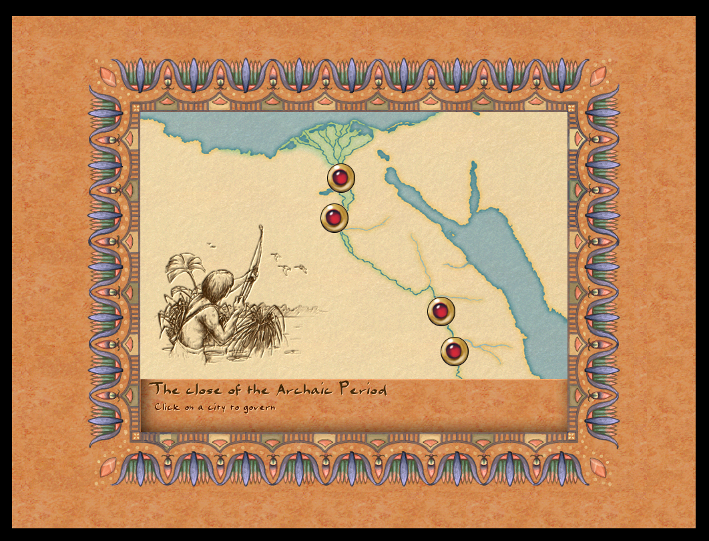

Mission Selection: Script-Driven Windows

The mission selection and briefing flow has been migrated from C++ to JavaScript. The "select next mission" window is now fully script-driven, and the mission briefing window has been updated to use autoconfig initialization — continuing the pattern established with the Tax Collector and Sound Settings windows.
What Changed
- New
ui_mission_choice_window.js— 139 lines replacingmission_next.cpp(85 lines removed) - Mission briefing window switched to autoconfig window init
- Position setup for the mission list in the scenario selection screen fixed
mission_6_behdet.js— added Marathart and Baruth mission entries
Mission Choice Window
The new game_show_mission_choice(scenario_id) function reads a per-mission config object (e.g. mission6) to determine available choices. If there are no branching choices configured, it falls straight through to __game_load_mission(). If choices are present, it opens the mission_choice_window via the event system:
emit event_show_window{ id:"mission_choice_window" }
A debug console command update_mission_next was also added, making it easy to test the window for any scenario ID without playing through the campaign.
Briefing Window: Autoconfig Init
window_mission_briefing.cpp now uses the standard autoconfig window initialization path, consistent with other recently migrated windows. This removes manual layout setup from C++ and lets the JS config fully control the window structure.
Why This Matters
With mission choice logic in JavaScript, campaign flow between missions becomes moddable. Modders can define branching mission paths — choosing between different next missions based on performance or story choices — entirely in script files, without touching engine code.